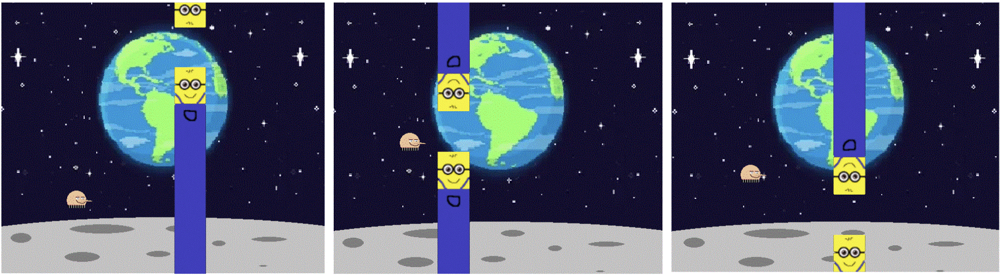

Home Page |
Portfolio
About Me
Brandon Kim's Portfolio
first project was creating my website,
which you are currently viewing
For the 1.1.9 project, Adam Interino and I decided to create flappy bird

We had to learn how to use threads inorder to allow the pipes to move whilst the code continously "listened" for keyboard inputs. It was a challenge, but it was fun to do. I learned alot.